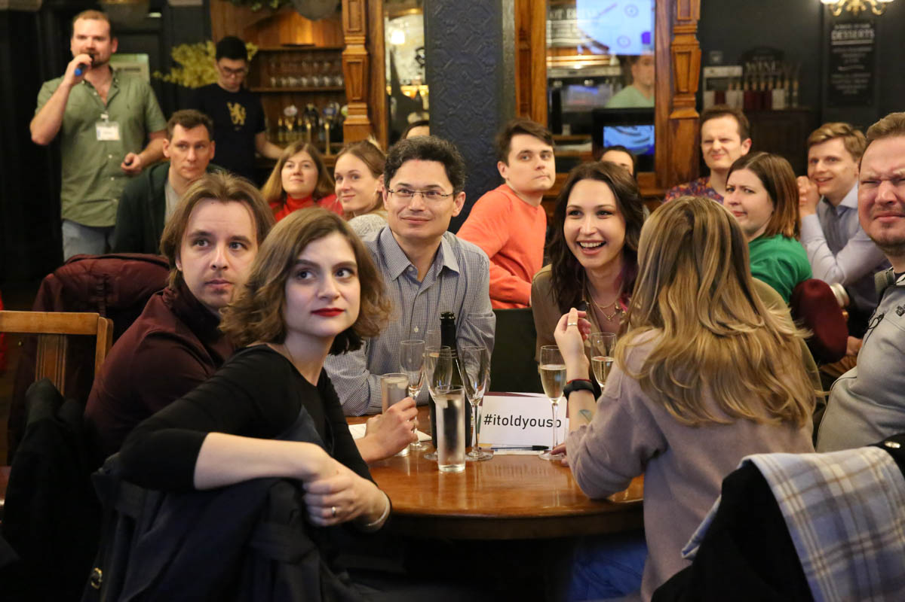

Что такое that1quiz?

Наш квиз – это интеллектуально-развлекательная игра на русском языке в Лондоне, где каждый участник отдыхает телом и душой, отвечая на специально придуманные и подобранные вопросы в теплой компании и уютной атмосфере паба и друзей по команде!
Читать подробнееПочему that1quiz?
Это смена деятельности, что, как говорится, лучший отдых! Квиз
поможет вам расслабиться и отвлечься от повседневной жизни, переключиться с насущных проблем на
позитив
Это что-то новое, чтобы развеять скуку, вместо сидения на диване с
телефоном перед телевизором. Эдакий лёгкий гаджет-детокс, только человеческое общение
Это значит, что вы можете провести время с друзьямии и завести
новые знакомства
Это тренировка мозга, прокачка логики и интуиции
Это здоровый азарт, стремление к победе и приятные призы
Наши вопросы
- в других местах вы таких не найдёте!
- проверены на разновозрастной фокус группе (18-55)
- разной сложности: простые, средние, сложные и хардкор
- затрагивают такие темы, как путешествия, литература, кинематограф, музыка, еда, животный мир, русская культура и не только!
- помогут расширить кругозор
- подразумевают не только общие знания, но и логическое мышление, дедукцию и командный мозговой штурм для поиска правильного ответа